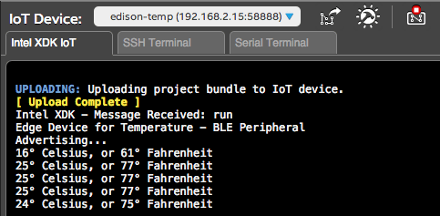
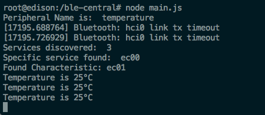

Read sensor data over BLE
Building off of the Temperature Sensor and LCD Intel® Commercial IoT Workshop exercise, turn your Intel® Edison into a BLE peripheral.
Confirm your set up
-
The Grove Temperature Sensor should be connected to analog pin A0.
And the Grove LCD should be connected to any I2C pin.

-
Your main.js (running on the Intel® Edison) from Temperature Sensor and LCD should look like this:
./temperature/main.js
Turn the Intel® Edison into a BLE peripheral
Use bleno, a NodeJS module, to turn the Intel® Edison into a BLE peripheral.
-
In your Intel XDK project, open package.json and locate the
dependenciesconfiguration. -
Add the
blenoNodeJS module to the dependencies list. -
In main.js, add
blenoalongside the rest of your module imports.// Include the JavaScript UPM libraries var groveSensor = require('jsupm_grove'); var LCD = require("jsupm_i2clcd"); // Include the libraries for BLE var bleno = require('bleno'); // Create a new instance of a Grove Temperature Sensor var temp = new groveSensor.GroveTemp(0); var celsius = null; // Create a new instance of a Grove RGB LCD screen var screen = new LCD.Jhd1313m1(6, 0x3E, 0x62); -
Declare references to the bleno BLE classes for
PrimaryService,Characteristic,Descriptor.// Include the libraries for BLE var bleno = require('bleno'); // Create a new instance of a Grove Temperature Sensor var temp = new groveSensor.GroveTemp(0); var celsius = null; // Create a new instance of a Grove RGB LCD screen var screen = new LCD.Jhd1313m1(6, 0x3E, 0x62); // Extend the bleno BLE classes var BlenoPrimaryService = bleno.PrimaryService; var BlenoCharacteristic = bleno.Characteristic; var BlenoDescriptor = bleno.Descriptor; -
You will need to inherit from the bleno BLE classes, so add
utilto your module imports.// Include the libraries for BLE var bleno = require('bleno'); var util = require('util'); -
Use
utilto extend bleno'sPrimaryServiceandCharacteristic.TemperatureService()andTemperatureReadCharacteristic()have been defined for you below.// Extend the bleno BLE classes var BlenoPrimaryService = bleno.PrimaryService; var BlenoCharacteristic = bleno.Characteristic; var BlenoDescriptor = bleno.Descriptor; util.inherits(TemperatureReadCharacteristic, BlenoCharacteristic); util.inherits(TemperatureService, BlenoPrimaryService); function TemperatureService(){ TemperatureService.super_.call(this, { uuid: 'ec00', characteristics: [ new TemperatureReadCharacteristic() ] }); } function TemperatureReadCharacteristic(){ TemperatureReadCharacteristic.super_.call(this,{ uuid: 'ec01', properties: ['read'], descriptors: [ new BlenoDescriptor({ uuid: 'ec02', value: 'Temperature Read' }) ] }); } function monitor() { //... } monitor(); -
bleno will need to write the sensor value to a buffer so declare a global variable
celsiusto use inTemperatureReadCharacteristic.prototype.onReadRequestdefined below.Update
monitor()to use the global variable instead of a local variable.// Create a new instance of a Grove Temperature Sensor var temp = new groveSensor.GroveTemp(0); var celsius = null; // Create a new instance of a Grove RGB LCD screen var screen = new LCD.Jhd1313m1(6, 0x3E, 0x62); util.inherits(TemperatureReadCharacteristic, BlenoCharacteristic); util.inherits(TemperatureService, BlenoPrimaryService); // Extend the bleno BLE classes var BlenoPrimaryService = bleno.PrimaryService; var BlenoCharacteristic = bleno.Characteristic; var BlenoDescriptor = bleno.Descriptor; function TemperatureService(){ //... } function TemperatureReadCharacteristic(){ //... } TemperatureReadCharacteristic.prototype.onReadRequest = function(offset,callback){ if (offset){ callback(BlenoCharacteristic.RESULT_ATTR_NOT_LONG, null); } else{ if (null !== celsius){ var buffer = new Buffer(1); buffer.writeUInt8(celsius,0); callback(BlenoCharacteristic.RESULT_SUCCESS, buffer); } } }; function monitor() { setInterval(function() { // Read the temperature sensorvar celsius = temp.value();celsius = temp.value(); var fahrenheit = Math.round(celsius * 9.0/5.0 + 32.0); console.log(celsius + "° Celsius, or " + fahrenheit + "° Fahrenheit"); // Update the LCD screen screen.setCursor(0, 0); screen.setColor(255, 255, 255); screen.write("Temp: " + celsius + "C or " + fahrenheit + "F"); }, 1000); } monitor(); -
Finally, add event listeners for the
stateChangeandadvertisingStartbleno BLE events.The callback function for the
stateChangeevent implements asetInterval()so remove themonitor();statement and thesetInterval()frommonitor().function monitor() {setInterval(function() {// Read the temperature sensor celsius = temp.value(); var fahrenheit = Math.round(celsius * 9.0/5.0 + 32.0); console.log(celsius + "° Celsius, or " + fahrenheit + "° Fahrenheit"); // Update the LCD screen screen.setCursor(0, 0); screen.setColor(255, 255, 255); screen.write("Temp: " + celsius + "C or " + fahrenheit + "F");}, 1000);}monitor();bleno.on('stateChange', function(state) { if (state == 'poweredOn') { bleno.startAdvertising('temperature', [], function(err) { if (err) { console.log(err); } setInterval(monitor, 1000); }); } else { bleno.stopAdvertising(); } }); bleno.on('advertisingStart', function(err) { if (!err) { console.log('Advertising...'); bleno.setServices([ new TemperatureService() ]); } }); -
Your final main.js should look like the final solution on Github.
Make sure your changes have been saved and use the buttons at the bottom of the Intel® XDK to: (1) Build, (2) Upload, and (3) Run the application.
If successful, you should see the console log output the temperature every 1 second.

Turn the Intel® IoT Gateway into a BLE central module
Use noble, a NodeJS module, to turn the Intel® IoT Gateway into a BLE central module that will read the temperature data broadcasted from a BLE peripheral (i.e. your Intel® Edison).
-
Log into your Intel® IoT Gateway.
-
Create a new project directory.
mkdir ble-centralAnd change into it.
cd ble-central -
Install
nobleusing NPM.npm install noble -
Create a Node application and name the file main.js.
touch main.js -
Use vi to edit main.js.
vi main.js -
Press
ito insert code using vi.Include the
nobleNodeJS module at the top of the file.var noble = require('noble'); -
Declare constants for the BLE service.
These are the same UUID's used in the peripheral code that's running on the Intel® Edison.
var ServiceName = 'temperature'; var Service_UUID = 'ec00'; var Characteristic_UUID = 'ec01'; var TemperatureCharacteristic = null; -
Add the supplied
readTemperature()function to read the temperature value from the buffer.function readTemperature() { TemperatureCharacteristic.read(function(error) { if(error){ clearInterval(readTemperature); console.log(error); } }); TemperatureCharacteristic.once('read', function(value) { var celsius = value.readUInt8(0); console.log ('Temperature is ' + celsius + '°C'); }); }Note that the buffer offset position is the same as the buffer position used in the peripheral code. If you recall, you used
buffer.writeUInt8(celsius,0);on the Intel® Edison. -
handleService()will loop through the Bluetooth characteristics sent and look for the one that matchesCharacteristic_UUIDor 'ec01'.function handleService(service){ service.discoverCharacteristics([], function(error, characteristics) { characteristics.forEach(function(characteristic){ console.log('Found Characteristic:', characteristic.uuid); for(var i = 0, l = characteristics.length; i < l; i++) { if (characteristics[i].uuid === Characteristic_UUID){ TemperatureCharacteristic = characteristics[i]; setInterval(readTemperature,1000); break; } } }); }); } -
Finally, add event listeners for the
stateChange,discover, anddisconnectnoble BLE events.noble.on('stateChange', function(state) { if (state === 'poweredOn') { noble.startScanning(); } else { noble.stopScanning(); } }); noble.on('discover', function(peripheral) { console.log('Peripheral Name is: ', peripheral.advertisement.localName); if(peripheral.advertisement.localName == ServiceName){ noble.stopScanning(); peripheral.connect(function(error) { if(error){ console.log(error); return; } peripheral.discoverServices([], function(error, services){ console.log(services.length, ' services discovered'); for (var i = 0, l = services.length; i < l; i++ ){ var service = services[i]; if (Service_UUID == service.uuid) { noble.stopScanning(); console.log('Specific service found: ', service.uuid); handleService(service); } } }); }); } }); noble.on('disconnect', function() { console.log('Trying to reconnect'); noble.startScanning(); });The
discoverevent handler is what looks for the'temperature'service in order to callhandleService()when there's a matching service found. -
Press
ESCto exit out of vi insert mode. -
Type
:wqto write your changes to the file and quit out vi. -
Check that your peripheral app is still running on your Intel® Edison. (e.g. It should still be logging temperature values to the Intel® XDK console.) Restart if needed.
-
Run the BLE central module on the Intel® IoT Gateway as a Node application.
$ node main.js -
If successful, you should see the Intel® IoT Gateway scan for matching Bluetooth services. When the Intel® Edison is found, it will read the temperature value and output it to the terminal window.
